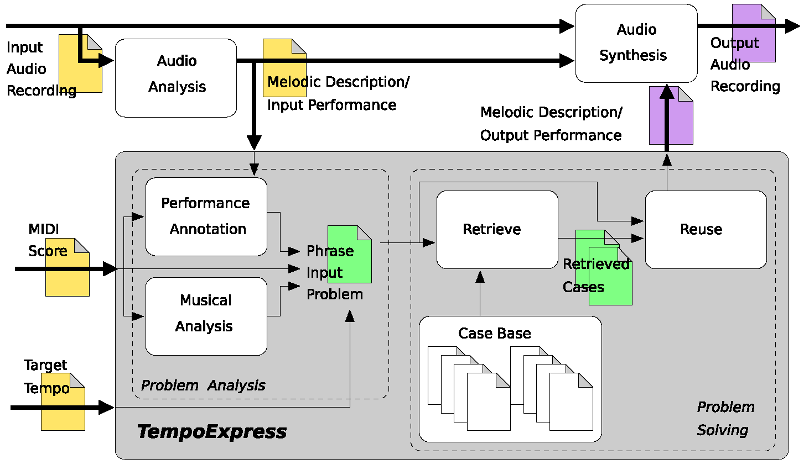
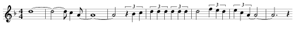

The research was focused on expressivity-aware tempo transformations of monophonic audio recordings of saxophone jazz performances. We investigated the problem of how a musical performance played at a particular tempo can be rendered automatically at another tempo, while preserving naturally sounding expressivity. This problem cannot be reduced to just applying a uniform transformation to all notes of the melody, since it often degrades the musical quality of the performance. We developed TempoExpress, a case-based reasoning system for expressivity aware tempo transformations. A validation of the system showed superior results compared to uniform transformation.
A list of publications is available at the CBR-ProMusic page.

Once I Loved (second part of first phrase)

Original sound, tempo: 55bpm (mp3, 286k)
Transformed sound using uniform time stretching, tempo: 100bpm (mp3, 154k)
Transformed sound using CBR, tempo: 100bpm (mp3, 157k)